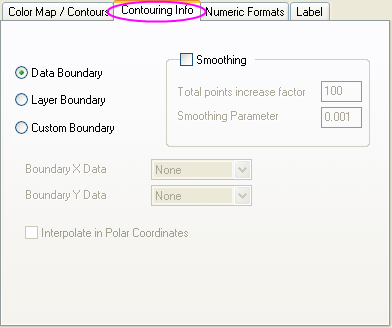
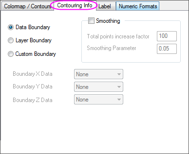
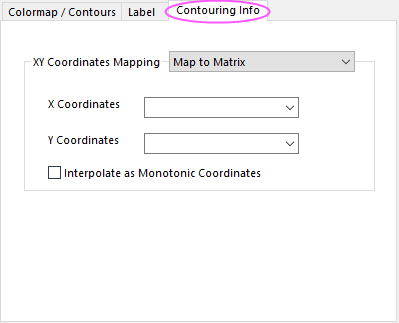

Prior to Origin 2018 SR0, the application of a custom boundary sometimes generated an imperfect fill at boundary margins. This has been improved in 2018. The user can restore the previous contour-fill behavior using system variable @TCSM.
In Origin, contour plots can be created using one of Origin's several matrix conversion and gridding algorithms, or by direct plotting of XYZ worksheet data. For a discussion of contouring algorithms, see the algorithm page for contour plot. Note that prior to Origin 2016, xyz (worksheet data) were normalized before contours were generated; Beginning with Origin 2016, raw x and y data values are used. See Normalize Data for XYZ Contour/Surface Plot.
When worksheet data are plotted directly (without gridding), the contour plot's Details dialog box will display an extra tab -- the Contouring Info tab (note that these controls also apply to theta-r contour plots).
| :  |
:  |
| General Contouring Info tab | General Contouring Info tab for Ternary Contour graph |
When matrix data are plotted contour plot, XY Coordinates Mapping can be specified in the Contouring Info tab.
| :  |
| Contouring Info tab for Matrix dataset |
The Boundary controls allow you to mask the edges of the XYZ contour plot. There are three choices:
| Data Boundary |
The raw data boundary. It also can be affected by Smoothing parameters. |
|---|---|
| Layer Boundary |
The layer frame determined by Origin extrapolation. Note:
|
| Custom Boundary |
Customize a new boundary by setting Boundary X Data, Boundary Y Data (and Boundary Z Data). |
|
Prior to Origin 2018 SR0, the application of a custom boundary sometimes generated an imperfect fill at boundary margins. This has been improved in 2018. The user can restore the previous contour-fill behavior using system variable @TCSM. |
Perform XYZ interpolation to smooth the contour plot using Thin Plate Spline (TPS) algorithm
It provides controls as below.
| Total points increase factor |
Expand the number of plotted points by multiplying the original number of points by this factor. This number should not be less than 1. |
|---|---|
| Smoothing Parameter |
The Thin Plate Spline smoothing parameter. Determines the degree of smoothing. Smaller numbers produce less smoothing. |
|
For Origin 2017 and any ealier versions, once you selected Custom Boundary radio box, the Smoothing check box will be checked and grayed out by default. You are not allowed to turn the smoothing off any more. However, sometimes you will find the color scale and color levels are changed after applying the custom boundary. To prevent it, you will need to use the system variable @TCS to set the maximum number of data points for tri-contour smoothing as small as possible, for example @tcs=0, to "turn off" the smoothing visually. |
When the contour plot is a polar contour plot, this tab is enabled. Checking this check box, the coordinate data will be mapped in polar coordinates with the contour data.
This option is only avaliable for the contour graph created from matrix data.
When you mapped the X/Y coodinates to matrix sheets but the coordinates data is not monotonic, you can check this option to interpolate the coordinates data to make the data be monotonic. Then the XY coordinates mapping will work well with the contour graph.
In the X Coordinates and Y Coordinates drop-down list, select More... option to open the Dataset Browser dialog to specify a column in the Worksheet as XY coordinates.
In the X Coordinates and Y Coordinates drop-down list, it lists matrix object the same matrix sheet. Select More... option to open the Dataset Browser dialog to specify other matrix as XY coordinates.
_Contouring_Info_Tab/Tri_contour_smooth_mode.png)